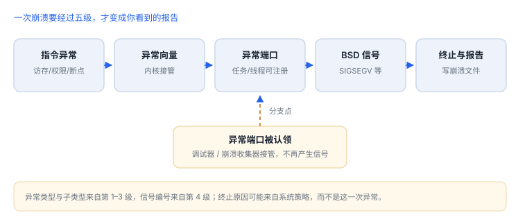

异常、信号与崩溃现场
先读异常类型与子类型，再读线程与寄存器；顺序错了结论就会错
崩溃报告是现场记录：异常类型说明谁触发了陷阱，子类型给出地址与原因，线程与寄存器给出位置。读懂这三个层次，比背符号表有用。
场景 一封崩溃报告里真正有用的只有三行：异常类型、子类型、触发线程。剩下几百行，都是这三行的注脚。
1. 五级接力
- 指令触发同步异常（缺页、权限、对齐、断点）。
- CPU 进入内核异常向量。
- 内核检查任务/线程是否注册了异常端口。
- 无人认领时转换为 BSD 信号（SIGSEGV/SIGBUS/SIGILL/SIGABRT）。
- 信号无处理者则终止进程并写报告。

2. 异常类型与编号
| 异常 | 编号 | 常见信号 | 典型原因 |
|---|---|---|---|
| EXC_BAD_ACCESS | 1 | SIGSEGV(11) / SIGBUS(10) | 空指针、释放后使用、越界 |
| EXC_BAD_INSTRUCTION | 2 | SIGILL(4) | 非法指令、断言失败 |
| EXC_BREAKPOINT | 6 | SIGTRAP(5) | 断点、运行时检查 |
| EXC_CRASH | 10 | SIGABRT(6) | 未捕获异常、主动中止 |
| EXC_GUARD | 12 | SIGKILL(9) | 违规使用受保护资源（如越界访问文件描述符） |
访存类异常的子类型最关键：KERN_INVALID_ADDRESS（1）表示地址无效，KERN_PROTECTION_FAILURE（2）表示权限不足。前者通常是野指针，后者常是写只读页或保护类未解锁。
3. 报告长什么样
崩溃报告头部（标准格式）
Exception Type: EXC_BAD_ACCESS (SIGSEGV)
Exception Subtype: KERN_INVALID_ADDRESS at 0x0000000000000010
Termination Reason: SIGNAL 11 Segmentation fault: 11
Triggered by Thread: 0读法：地址 0x10 说明是空指针加偏移；Triggered by Thread: 0 告诉你先看主线程，而不是遍历所有线程。
4. 寄存器与线程状态
| 寄存器 | 含义 | 用途 |
|---|---|---|
pc | 触发异常的指令 | 定位到函数与行号 |
lr | 返回地址 | 看调用来源 |
fp | 帧指针 | 还原调用链 |
x0 | 第一个参数/返回值 | 判断对象是否为空 |
5. 系统终止不是崩溃
| 终止码 | 含义 | 证据特征 |
|---|---|---|
0x8badf00d | 看门狗超时 | 主线程长时间无响应，无异常帧 |
0xdead10cc | 挂起时仍持有文件锁/数据库 | 后台被终止，回溯停在持锁调用 |
先分类再分析
Termination Reason 明确写着系统原因时，不要去读异常帧——那里往往没有异常，只有“被杀时正在做什么”。
Termination Reason 明确写着系统原因时，不要去读异常帧——那里往往没有异常，只有“被杀时正在做什么”。
6. 失败分流
| 现象 | 原因 | 查哪里 |
|---|---|---|
| 报告无异常帧 | 被系统终止 | Termination Reason |
| 栈顶全是系统库 | 系统代调用方执行非法操作 | 往下找调用来源 |
| 同一地址反复崩 | 释放后使用或缓存失效指针 | 对象生命周期 |
| 仅锁屏后崩溃 | 文件保护类未解锁 | 保护类与读取时机 |
| 符号化行号偏移 | 符号文件与构建不匹配 | UUID 核对 |
7. 一次真实排查记录：同一地址反复崩溃
- 现象：不同入口进去，崩溃地址几乎相同。
- 先看子类型：
KERN_INVALID_ADDRESS且地址很小，通常是空指针加偏移。 - 再问生命周期：同一地址反复出现，多与“释放后使用”或缓存的失效指针有关。
- 验证：在对象释放处下断点，确认崩溃发生在其后。
- 结论与限制：记录“释放后使用”，并注明结论只对该崩溃路径成立。
若地址是大数（远超正常范围），更可能是野指针或越界；两种情形的修复方式完全不同。
8. 自测
KERN_INVALID_ADDRESS与KERN_PROTECTION_FAILURE分别说明什么？- 为什么
0x8badf00d的报告里通常没有异常帧？ pc/lr/fp在定位崩溃点时各起什么作用？- “崩溃在系统库”为什么多数不是系统的问题？